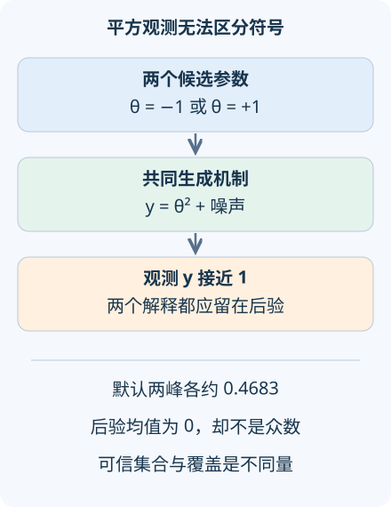

本讲目录
AI 研究 04 · 模拟推断：观测能告诉我们哪些参数
问题：模拟器能从参数生成数据，但拿到数据后，能否唯一找回参数并诚实表达不确定性？先修：贝叶斯公式、神经网络。资料核查截至 2026-09-08；实验用可枚举真值检验后验与覆盖，不能代替复杂模拟器的验证。
1. 正向容易，逆向可能没有唯一答案
给定材料参数，模拟一次散射图样可能很容易；对每个候选参数写出观测的概率密度，却可能极其困难。模拟推断利用能生成 \((\theta,y)\) 的程序学习似然、后验或密度比，让大量重复推断更便宜。困难不只在计算量，还在于观测究竟包含多少辨识信息。
先研究一个小得可以穷举的模型：\(\theta\) 均匀取 \(\{-2,-1,0,1,2\}\)，观测
变量无量纲。\(+1\) 与 \(-1\) 生成完全相同的观测分布，\(+2\) 与 \(-2\) 也是如此。无论收集多少这种平方观测，都无法在对称先验下识别符号。这是统计模型的不可辨识性，不是神经网络太小。

2. 从贝叶斯公式算出多峰后验
若推断时采用的噪声标准差为 \(\sigma\)，五个参数的后验质量为
均匀先验和相同高斯归一化常数在分子分母中抵消。实现先减去最大的对数权重再指数化，避免极小概率全部下溢为零；这只改变数值尺度，不改变概率比。
当 \(y=1,\sigma=0.5\)，\(\theta=\pm1\) 各约占 \(0.468311\)，零约占 \(0.063379\)，两个端点各约 \(7.13\times10^{-9}\)。后验均值是零，却不是概率最大的解释。报告一个均值和一条连续误差棒，会隐藏“双峰之间反而不可信”的结构。
本讲构造至少含 80% 后验质量的集合：按概率从大到小加入参数，达到阈值时保留全部并列项。默认集合是 \(\{-1,1\}\)，质量约 \(0.936621\)。由于参数离散且保持并列对称，它通常无法恰好含 80%，这会影响后面覆盖率的读法。
3. 学一个后验，与算这个后验有什么关系
真实科学模拟常没有可计算的似然，因此用网络 \(q_\phi(\theta\mid y)\) 拟合模拟联合分布中的条件规律。若从先验抽参数再模拟数据，负对数似然目标可分解为
第一项与网络无关，第二项衡量条件分布差异。因此理想容量和理想优化下，目标指向真实后验；有限训练、先验覆盖不足和模拟器偏差都会使这个结论难以直接实现。SBI 综述，首稿 2019-11-04梳理了不同学习对象与科学用途。
本实验故意不训练网络，因为精确枚举为后验算法提供了独立真值。若小模型都不能保持符号对称和概率归一化，扩大规模只会让错误更难诊断。若使用顺序模拟集中到特定观测附近，还要处理提议分布与原先验的差异，不能把采样策略悄悄当成新的先验。
4. 覆盖率的平均对象必须说清
令 \(C(Y)\) 为可信集合。本实验重复从上述先验和真实噪声生成数据，计算
这是先验预测覆盖。若推断模型正确，则由全期望公式，它等于 \(\mathbb E_Y p(\theta\in C(Y)\mid Y)\)，至少约为 0.8。它不是对每个固定 \(\theta\) 都有 80% 的频率学保证。离散集合过度包含与并列项保留，会使本例默认平均值高达约 \(0.973094\)。
程序对标准正态 \(z\in[-6,6]\) 以步长 0.025 做梯形积分，逐个参数检查集合是否包含真值，再按均匀先验平均；截断积分经过归一化。因此显示值是数值近似，不能把最后几位当成精确概率。调整假设噪声而保留真实噪声 0.5，可观察模型设定错误如何改变不确定性。
SBC，首稿 2018-04-18利用联合分布的自洽性检查贝叶斯计算，常用后验样本秩等统计。离散参数存在并列秩，需专门处理；本实验的可信集合覆盖图不是完整 SBC 的替代实现。
5. 近期诊断为何继续研究“覆盖也会骗人”
Generalizing Coverage Plots，TMLR 2026-03-22 提前在线发表指出，已有期望覆盖图可能把明显错误的后验也判断为良好，并提出更有辨识力的诊断。一个直观警报是：始终返回很宽的集合可能覆盖很好，却没有利用观测。
实际报告应同时检查后验形状、与真值可比的模拟任务、覆盖随参数区域的变化，以及后验预测是否解释新数据。模拟器缺少关键物理时，即使网络精确学会其后验，也不代表现实参数可靠。训练集、校准集和最终评估模拟要分开，参数范围与噪声设定要记录。
还应区分“算法没算对”与“观测模型不对”。在本例中，若程序算出的正负概率不相等，是实现或近似算法违背了已知对称；若现实噪声有重尾却仍用高斯似然，则精确计算也只能得到错误模型的后验。前者可用枚举真值和结构测试定位，后者要靠新数据、残差与物理知识识别。二者需要不同修复，不能一律归因于样本不足。
先固定 \(y=1\) 缩小假设噪声：正负两个峰会更集中，但符号仍不可辨识。再移动观测，检查左右概率是否始终配对；这是本模型可用的结构诊断。默认覆盖约 97.31%，并非“比 80% 预测准确率更好”。
6. 迁移练习
题一：新增观测 \(z=\theta+\eta\)，其中噪声已知，能否帮助识别符号？
展开答案
可以。正负参数现在给出不同的联合观测分布。若两种噪声条件独立，联合似然是两项乘积；噪声越大帮助通常越弱，但原则上打破了原来的符号对称。仅继续测量平方量则不能做到这一点。
题二：可信集合始终取全部五个参数，覆盖率为多少？它说明算法优秀吗？
展开答案
覆盖为 1，但没有排除任何参数。应同时关注集合大小、后验概率质量和数据依赖性；覆盖是必要的诊断维度之一，不能独自衡量信息量或后验正确性。
速查摘要
| 概念 | 本讲含义 |
|---|---|
| 不可辨识 | \(+\theta\) 与 \(-\theta\) 的观测分布相同 |
| 可信集合 | 至少含 80% 后验质量，并列一起保留 |
| 先验预测覆盖 | 对参数先验和模拟观测共同平均；非逐参数保证 |